Chapter 3 명세서 기반의 분석적 접근
명세서를 기반으로 한 분석은 크게 1) 질병통계 작성, 2) 의약품 사용 분석, 3) 의 료경영 관련 지표 생성으로 구분할 수 있다. 2015년 전체환자를 대상으로 하는 NPS-2015 표본자료를 이용하여 명세서 기반의 분석을 위한 단계 및 프로그램을 설 명하고자 한다. 2015년 전체환자 데이터셋은 2015년에 요양기관을 방문한 환자를 대 상으로 성별, 연령구간(5세 단위)에 따라 층화 계통 추출한 자료로 1,454,252명의 1년 간 진료내역과 처방내역을 모두 포함하고 있는 자료이다.
3.1 명세서 기반의 질병, 의약품 사용
명세서일반내역 테이블(T200)은 하나의 행에 한건의 명세서의 정보를 담고 있으며, 진료내역 테이블(T300), 수진자상병내역 테이블(T400), 원외처방전상세내역 테이블 (T530)은 T200 테이블의 한 건의 명세서에 대해 여러 줄로 세부적인 진료내역, 상병, 원외처방내역 등의 정보를 담고 있다.

따라서 명세서 기반의 질병, 의약품 사용에 대한 변수 생성을 위해서는 1) T300, T400, T530 테이블에서 변수를 생성하고, 2) T200 테이블에 조인하기 위해 명세서
기준 변수를 생성하여 3) T200 테이블에 조인하는 단계를 거쳐야 한다.
※ 프로그램 Tip : 라이브러리 등록
/* SAS 라이브러리명 및 경로 지정 */
libname Hira "E:\의료정보안내서\sasdata"; /* 심평원 2015년 자료 */
위 프로그램 수행 결과 생성되는 DATA SET은 다음과 같다.
libname HIRA "E:\의료정보안내서\sasdata"
⇒ 위 경로(E:\의료정보안내서)를 HIRA 라이브러리로 할당하여 앞으로 가공할 대상의 DATA SET이 있는 경로를 지정
- libname 라이브러리이름‘경로’: LIBNAME문장은 작업을 할 때마다 영구적 SAS라이브러리에
저장된 SAS파일들에 접근하기 위해 라이브러리를 할당한다.
예)
② options compress=yes
⇒ SAS 데이터 셋 생성 시 compress 옵션을 사용함으로써 데이터 사이즈의 효율적인 관리 및 데이터 작업시간을 단축시킬 수 있다.
- compress = YES : 문자형(CHAR)필드를 압축하는 옵션이다. 데이터의 용량이 낭비되는 현 상을 방지할 수 있으며, 공백을 포함한 문자가 2,3byte 연속 반복될 때
유용하다.3.1.1 질병 변수 생성
T400 테이블에서 다음 질병에 대한 상병코드가 있는지 여부를 파악하고자 한다.
| 질환 | KCD 상병코드 |
|---|---|
| 전체 암(Cancer) | C00-C97 |
| 당뇨병(Diabetes melitus) | E10-E14 |
| 고혈압(Hypertension) | I10-I15 |
| 천식(Asthma) | J45-J46 |
| 관절증(Arthrosis) | M15-M19 |
| 류마티스 관절염(Rheumatoid arthritis) | M05-M06 |
| 신부전증(Renal failure) | N17-N19 |
| 뇌혈관 질환(Cerebrovascular diseases) | I60-I69 |
| 이상지질혈증(Dislipidemia) | E78 |
| 허혈성 심장질환(Ischaemic heart diseases) | I20-I25 |
T200 테이블에는 명세서조인키(SPEC_ID_SNO)와 주상병(MSICK_CD), 제 1 부상병 (SSICK_CD)만 저장되어 있으며, T400 테이블에는 한 건의 명세서에 대한 주상병과 모든 부상병이 다음 그림과 같이 여러 줄로 상병(SICK_CD)에 저장되어 있다. 질병의 특성에 따라 질병 정의 시 사용하는 상병의 개수를 제한할 수 있다.

3.1.1.1 T400 테이블에서 질병 여부 변수 생성
T400 테이블에서 질병 여부 변수는 IF 조건문을 사용하여 다음과 같이 생성할 수 있는데, 해당 상병 조건을 만족할 경우 새롭게 생성된 변수에 1을 할당하는 방식으 로 생성한다. 이때 IF 조건문에서 상병코드의 개수가 작은 경우 IN 문장을 사용할 수 있으며, 연속적인 상병코드를 가지고 있는 경우 부등식 조건을 이용할 수 있다. 여기 서 정의 대상 상병코드가 3단위 코드인지 4단위 코드인지를 구분하여, SUBSTR 함수 를 이용하여 조건문에서 비교할 상병코드의 자리수를 정해 준다.
/* T400 테이블에서 질병 여부 변수 생성*/ data t40_1;
set hira.t40;
/*T40의 모든 상병코드에 대해 대상질병 변수 생성*/
if 'C00' <= substr(SICK_CD,1,3) <= 'C97' then cancer=1; /* 전체 암 */
if substr(SICK_CD,1,3) in ('E10', 'E11', 'E12', 'E13', 'E14') then diabetes=1; /* 당뇨병 */ if substr(SICK_CD,1,3) in ('I10', 'I11', 'I12', 'I13', 'I14', 'I15') then hypertension=1;
/* 고혈압 */
if substr(SICK_CD,1,3) in ('J45', 'J46') then asthma=1; /* 천식 */ if substr(SICK_CD,1,3) in ('M15', 'M16', 'M17', 'M18', 'M19')
then arthrosis=1; /* 관절증 */
if substr(SICK_CD,1,3) in ('M05', 'M06')
then rheumatoid_arthritis=1; /* 류마티스 관절염 */
if substr(SICK_CD,1,3) in ('N17', 'N18', 'N19')
then renal_failure=1; /* 신부전증 */
if substr(SICK_CD,1,3) in ('I60', 'I61', 'I62', 'I63', 'I64', 'I65',
'I66', 'I67', 'I68', 'I69') then Cerebrovascular=1; /* 뇌혈관 질환 */
if substr(SICK_CD,1,3) in ('E78') then dislipidemia=1; /* 이상지질혈증 */ if substr(SICK_CD,1,3) in ('I20', 'I21', 'I22', 'I23', 'I24', 'I25')
then Ischemic=1; /* 허혈성 심장질환 */ run;
위 프로그램 수행 결과 생성되는 t40_1 테이블은 다음과 같다.

※ 프로그램 Tip
① if 'C00' <= substr(SICK_CD,1,3) <= 'C97' then cancer=1
⇒ T40의 상병코드가 입력되어있는 ‘SICK_CD’변수에서 substr함수를 통해 전체 암 상병코드 인 C00과 같거나 크고, C97과 같거나 작은 상병코드를 추출해 cancer라는 변수에 1을 넣어 변수를 생성
② if substr(SICK_CD,1,3) in ('E10', 'E11', 'E12', 'E13', 'E14') then diabetes=1
⇒ T40의 상병코드가 입력되어있는 ‘SICK_CD’변수에서 substr함수를 통해 해당 질병에 해당 하는 코드가 있을 경우 해당 질병 변수에 1이라는 값을 넣어 변수를 생성
③ substr(문자열, 시작위치, 길이)
특정변수에서 시작위치부터 시작으로 길이만큼 문자열을 추출 할 때 사용하는 함수 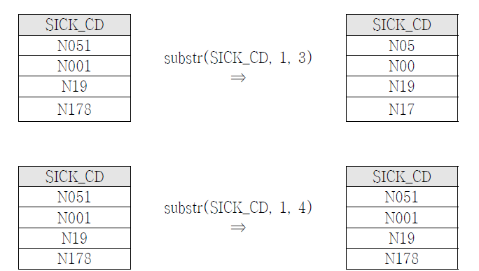
3.1.1.2 명세서 기준 질병 변수 생성
- 에서 생성된 t40_1 테이블은 동일한 명세서 조인키에 대해 여러 줄이 들어 있으 므로 T200 테이블에 조인하기 위해서는 하나의 명세서 조인키에 대한 테이블로 생성 이 필요하다. 왜냐하면 테이블 간에 조인 시 기준이 되는 변수가 각 테이블에서 중 복이 없어야하기 때문이다. 만일 기준 변수의 중복이 있을 경우 테이블 조인 시 중 복이 발생하게 된다. (1)에서 생성된 t40_1 테이블을 이용하여 명세서 기준의 질병변 수를 생성하기 위해 SQL 문의 GROUP BY 기능을 이용한다.

/*sql문을 통해 명세서단위로 대상질병 변수 요약*/ proc sql;
create table t40_2 as select SPEC_ID_SNO,
max(cancer) as cancer, /* 전체 암 */ max(diabetes) as diabetes, /* 당뇨병 */ max(hypertension) as hypertension, /* 고혈압 */ max(asthma) as asthma, /* 천식 */ max(arthrosis) as arthrosis, /* 관절증 */
max(rheumatoid_arthritis) as rheumatoid_arthritis, /* 류마티스 관절염 */ max(renal_failure) as renal_failure, /* 신부전증 */ max(Cerebrovascular) as Cerebrovascular, /* 뇌혈관 질환 */ max(dislipidemia) as dislipidemia, /* 이상지질혈증 */
max(Ischaemic) as Ischaemic /* 허혈성 심장질환 */ from t40_1
group by SPEC_ID_SNO; /* 명세서조인키를 기준으로 통합 */ quit;위 프로그램 수행 결과 생성되는 t40_2 테이블은 다음과 같다.

※ 프로그램 Tip
① select SPEC_ID_SNO, max(cancer) as cancer, max(diabetes) as diabetes, … group by SPEC_ID_SNO
⇒ 동인한 명세서 조인키를 가지는 경우 cancer 변수의 최대값을 cancer 변수에, diabetes 변수의 최대값을 diabetes 변수에 입력
② max(variable) : variable 의 최대값
③ group by variable : variable이 동일한 여러 행들을 모아 한줄로 요약함 (예) select key,
max(var1) as var1_max, sum(var1) as var1_sum, min(var1) as var1_min
group by variable;3.1.1.3 T200 테이블에 조인
(2)에서 생성된 명세서 기준 질병 여부를 나타내는 변수를 포함한 t40_2 테이블을 명세서 일반내역을 포함하고 있는 T200 테이블에 명세서 조인키 기준으로 조인하여 하나의 테이블을 최종적으로 생성한다. 이때 T200 테이블(왼쪽)을 기준으로 t40_2 테 이블을 조인하기 위하여 SQL 문의 LEFT JOIN 기능을 이용한다.
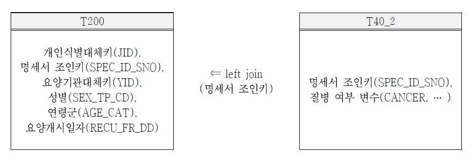
/*sql문을 통해 명세서단위로 요약된 대상질병 변수 join*/ proc sql;
create table t2040 as
select a.*, b.* /*a: hira.t20 , b: T40_2*/ from hira.t20 as a
left join t40_2 as b
on (a.SPEC_ID_SNO = b.SPEC_ID_SNO);
quit;위 프로그램 수행 결과 생성되는 t2040 테이블은 다음과 같다

※ 프로그램 Tip
① select a.*, b.*
⇒ a로 지정된 테이블(hira.t20)에 있는 모든 변수와 b로 지정된 질병여부를 포함한 테이블 (t40_2)의 모든 변수를 선택
② from hira.t20 as a
⇒ hira.t20테이블을 a로 지정
③ left join t40_2 as b
⇒ t40_2 테이블을 b로 지정하여 left join
④ on (a.SPEC_ID_SNO = b.SPEC_ID_SNO)
⇒ a로 지정된 테이블(hira.t20) 에서 SPEC_ID_SNO(명세서 조인키)와 b로 지정된 테이블 (t40_2)의 SPEC_ID_SNO(명세서 조인키)를 기준으로 join
⑤ Join : Left join, Right join, Inner join, Full join
a로 지정된 테이블과 b로 지정된 테이블간의 조인키를 기준으로 join (예)
SELECT <select list> FROM tableA as A
LEFT/RIGHT/INNER/FULL join tableB as B on A.KEY = B.KEY- Left join : 왼쪽테이블을 기준으로 오른쪽 테이블을 결합하는 방법. 왼쪽테이블에 대한 정보를 손실시키지 않고 오른쪽 테이블의 왼쪽테이블과 교차하는 정보만 결합하여 최종테이블을 생성

- Right join : 오른쪽테이블을 기준으로 왼쪽테이블을 결합하는 방법. 오른쪽테이블에 대한 정보를 손실시키지 않고 왼쪽 테이블의 오른쪽 테이블과 교차하는 정보만 결 합하여 최종테이블 생성

- Inner join : 왼쪽테이블과 오른쪽테이블이 교차(KEY값이 둘 다 존재)하는 테이블만 결합하 는 방법. 공통 된 값(교집합)만으로 테이블을 생성하게 되기 때문에 두 테이블 이 서로 완벽하게 대응되는 KEY값을 모두 갖고 있지 않으면 정보 손실이 발생
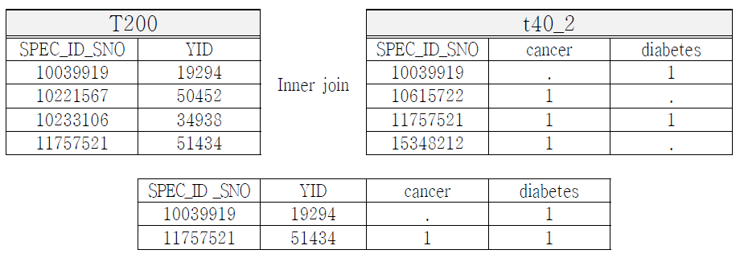 * Full join: 왼쪽, 오른쪽 둘 중 하나의 테이블에 KEY값이 존재하면 그 값들을 결합하여 테이 블 생성
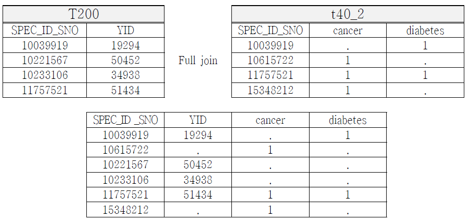
3.1.1.4 T2040 테이블에 요양기관 정보 조인
추가적으로 요양기관 테이블에 있는 변수들을 T2040 테이블에 조인하여 분석에 활 용하고자 할 경우 다음과 같이 요양기관 정보를 조인할 수 있다

/* 요양기관 변수 조인*/ proc sql;
create table t2040_yk as select a.*,
b.YID, b.SIDO_CD, b.CL_CD
from t2040 as a
left join hira.yk as b /*a: t2040, b: hira.yk */
on (a.YID = b.YID); /* YID(요양기관 대체키)를 기준으로 left join*/ quit;위 프로그램 수행 결과 생성되는 t2040_yk테이블은 다음과 같다

※ 프로그램 Tip
① select a.*, b.YID, b.SIDO_CD, b.CL_CD
⇒ a로 지정된 테이블(t2040)에 있는 모든 변수와 b로 지정된 테이블(hira.yk)의 YID, SIDO_CD, CL_CD 변수를 선택
② from t2040 as a
⇒ t2040 테이블을 a로 지정
③ left join hira.yk as b
⇒ hira 라이브러리의 yk 테이블을 b로 지정
④ on (a.YID = b.YID)
⇒ a로 지정된 테이블(t2040)에서 YID(요양기관 조인키)와 b로 지정된 테이블(hira 라이브러리의 yk)의 YID(요양기관 대체키)를 기준으로 join3.1.2 의약품 사용 변수 생성
T300 테이블과 T530 테이블에서 다음과 같은 고혈압 약제의 사용량과 사용금액을 파악하고자 한다. 의약품 사용에 대해 파악하기 위해서는 주성분코드 또는 약품코드 를 이용할 수 있으며, 약품코드는 T300테이블과 T530테이블의 분류코드(DIV_CD)에 입력되어 있다. 여기서는 주성분코드를 이용하고자 한다
| 분류 | 성분명 |
|---|---|
| ARB | losartan, candesartan, eprosartan, irbesartan, olmesartan, telmisartan, valsartan |
T300 테이블에는 요양기관 내에서의 약 처방 외에도 처치, 수술, 청구금액 등 상세 의료서비스 현황이 저장되어있기 때문에 주성분 코드가 입력되어 있는 행을 추출하여 이용해야 한다. T530 테이블에는 원외처방 약제만 저장되어 있다. 따라서 필요에 따라 원내처방과 원외처방을 구분한 후 의약품 테이블을 생성해 의약품 사용에 대한 분석을 할 수 있으며, 표본자료의 특성상 약품코드가 마스킹 되어있고 9단위인 주성분 코드가 8단위임을 고려하여 SUBSTR함수를 이용해 원하는 의약품에 대해 정의할 수 있다.

3.1.2.1 의약품 테이블 생성
의약품 테이블은 T300 테이블과 T530테이블을 통합하여 다음과 같이 생성할 수 있는데, WHERE문을 사용하여 T300 테이블에서 주성분코드가 입력되어있는 의약품 처방 내역을 선택하고, 원내·외처방 구분 변수에 1을 할당하여 원내처방을 정의하 며, T530 테이블에서 원내·외처방 구분 변수에 2을 할당하여 원외처방을 구분한다. 또한, 사용량 변수명이 다르기 때문에 사용량을 동일한 변수명에 할당하여 생성한다.
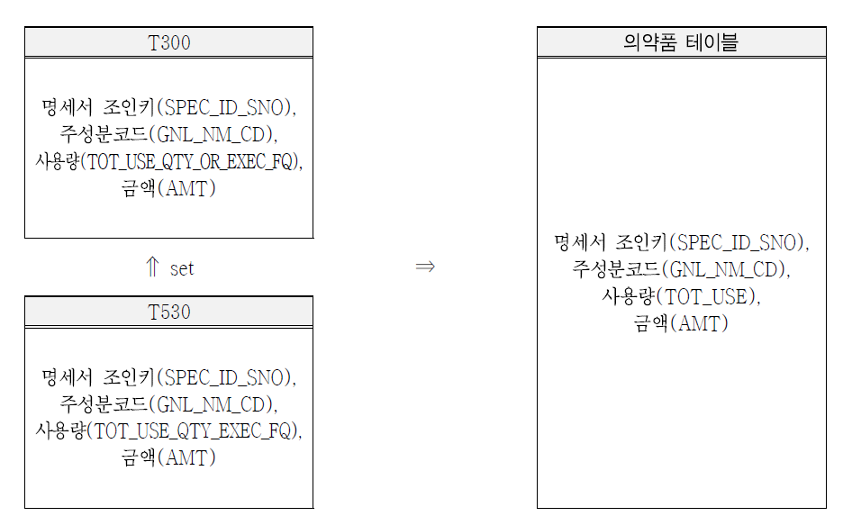
/*원내 의약품 사용 변수 생성 - 약물 및 실적(사용량, 금액) 추출 */
data drug_table_30; set hira.t30;
in_out=1; /*원내외처방 구분변수 1=원내, 2=원외*/
where gnl_nm_cd ne '$'; /*약처방 외의 수가행위를 제외하기 위해 주성분코드가‘$’인 줄 제거*/ TOT_USE=TOT_USE_QTY_OR_EXEC_FQ; /*T300의 사용량 변수와 T530의 사용량 변수의 변수명
이 다르기 때문에 하나의 변수로 통합*/ keep spec_id_sno gnl_nm_cd amt TOT_USE in_out;
run;
/*원외 의약품 사용 변수 생성 - 약물 및 실적(사용량, 금액) 추출 */ data drug_table_53;
set hira.t53;
in_out=2; /*원내외처방 구분변수 1=원내, 2=원외*/ TOT_USE=TOT_USE_QTY_EXEC_FQ;
keep spec_id_sno gnl_nm_cd amt TOT_USE in_out; run;
/*의약품 사용 변수 생성 – 의약품 테이블 생성*/ data drug_table;
set drug_table_30 drug_table_53; run;위 프로그램 수행 결과 생성되는 drug_table 테이블은 다음과 같다

※ 프로그램 Tip
① in_out=1, in_out=2
⇒ T300의 원내처방과 T530의 원외처방을 통합하기 전 in_out변수에 T300의 경우 1, T530의 경우 2으로 값을 할당하여 원내·외 구분
② where gnl_nm_cd ne '$'
⇒ T300에서 약 처방 외의 수가행위를 제외하기 위하여 주성분코드가 ‘$’인 변수를 제외하고 주성분코드가 입력되어 있는 줄만 선택
- where : 특정 조건에 맞는 데이터 셋을 생성하거나 내보낼 때 사용하는 함수
③ TOT_USE=TOT_USE_QTY_OR_EXEC_FQ
⇒ T300의 사용량 변수(TOT_USE_QTY_OR_EXEC_FQ)와 T530의 샤용량 변수(TOT_USE_QTY_EXEC_FQ) 의 변수명이 다르기 때문에 하나의 변수로 통합
(예) 변수명이 다른 경우, 테이블 통합 결과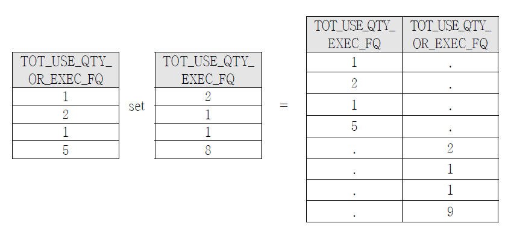
(예) 변수명이 동일한 경우, 테이블 통합 결과
④ keep spec_id_sno gnl_nm_cd amt TOT_USE in_out
⇒ 의약품 사용 분석에 필요한 변수인 명세서 조인키, 주성분코드, 금액, 사용량, 원내·외 처방구분변수만 선택
- keep : 원하는 변수만 설정하여 남김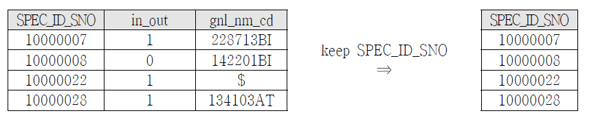
- drop : 필요 없는 변수 제거
3.1.2.2 의약품 테이블에서 의약품 변수 생성
- 에서 생성된 주성분 코드와 사용량, 금액 등을 포함한 drug_table로 고혈압 약제 주성분코드에 해당하는 주성분명 정의는 IF 조건문을 사용하여 다음과 같이 생성할 수 있는데, 해당 주성분코드 조건을 만족할 경우 성분명 변수(gnl_nm)에 성분명을 할 당하는 방식으로 생성한다. 이때 표본자료의 특성상 주성분코드는 8단위 코드임을 고려하여 생성한다.
/*의약품 변수 생성 - 고혈압 약효(ARB)에 따른 성분명*/
data drug_table_1; set drug_table; length gnl_nm $ 20;
if gnl_nm_cd in ('185701AT', '185702AT') then gnl_nm='losartan'; if gnl_nm_cd in ('122601AT', '122602AT') then gnl_nm='candesartan'; if gnl_nm_cd = '429201AT' then gnl_nm='eprosartan';
if gnl_nm_cd in ('177301AT', '177303AT') then gnl_nm='irbesartan';
if gnl_nm_cd in ('468501AT', '468502AT', '468503AT') then gnl_nm='olmesartan'; if gnl_nm_cd in ('378801AT', '378802AT') then gnl_nm='telmisartan';
if gnl_nm_cd in ('247101AT', '247102AT', '247103AT', '247104AT') then gnl_nm='valsartan'; run;위 프로그램 수행 결과 생성되는 drug_table_1 테이블은 다음과 같다.
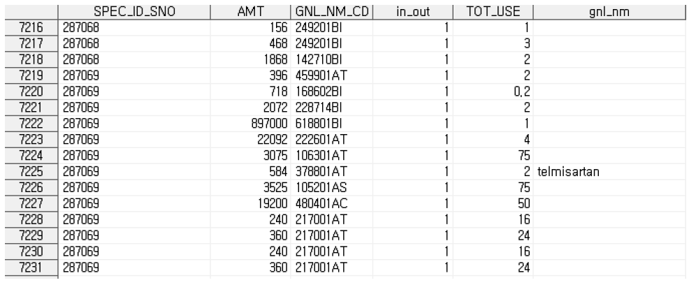
※ 프로그램 Tip
① length gnl_nm $ 20;
⇒ 문자변수의 기본 길이는 8이기 때문에 성분명 변수의 길이를 20으로 지정
- length : 문자변수의 길이 지정 
② if gnl_nm_cd in ('185701AT', '185702AT') then gnl_nm='losartan'…
⇒ 의약품 테이블에 주성분코드가 입력되어있는 ‘gnl_nm’변수에서 고혈압 약제에 대한 주성분코드에 해당하는 코드가 있을 경우 해당 성분명을 성분명변수에 넣어 변수 생성3.1.3 질병 및 의약품 사용 통합 테이블 생성
2.1-(4)에서 명세서 기준 요양기관 테이블의 변수를 T200 테이블에 조인하여 생성 된 t2040_yk테이블에 주성분 코드와 사용량, 금액 등을 포함한 drug_table 테이블을 조인하여 질병 및 의약품 사용 통합 테이블을 생성한다. 이때 t2040_yk 테이블을 기 준으로 drug_table을 조인하기 위하여 SQL문의 LEFT JOIN 기능을 이용한다.
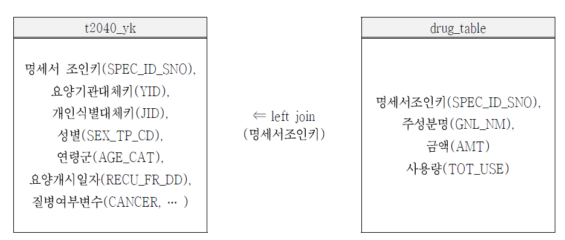
proc sql;
create table t2040_yk_drug as
select a.* , b.spec_id_sno, b.gnl_nm, b.amt, b.tot_use from T2040_yk as a
left join hira.drug_table as b
on (a.spec_id_sno = b.spec_id_sno); quit;위 프로그램 수행 결과 생성되는 t2040_yk_drug 테이블은 다음과 같다

※ 프로그램 Tip
① select a.*, b.spec_id_sno, b.gnl_nm, b.amt, b.tot_use
⇒ a로 지정된 테이블(T2040_yk)에 있는 모든 변수와 b로 지정된 테이블(hira.drug_table)의 명세서조인키, 성분명, 금액, 사용량변수를 선택
② from T2040_yk as a
⇒ T2040_yk 테이블을 a로 지정
③ left join hira.drug_table as b
⇒ hira 라이브러리의 drug_table 테이블을 b로 지정
④ on (a.spec_id_sno = b.spec_id_sno)
⇒ a로 지정된 테이블(T2040_yk)에서 spec_id_sno(개인식별대체키)와 b로 지정된 테이블 (hira 라이브러리의 drug_table)의 spec_id_sno(개인식별대체키)를 기준으로 join3.2 질병통계 작성
2.1에서 생성한 명세서 기준 질병여부 변수 및 T200 테이블의 명세서의 기본 정보 를 이용하여 건강보험통계연보 형식의 진료실 인원, 내원일수, 급여일수, 진료비, 급 여비, 환자당 진료비, 환자당 일당 진료비의 합과 평균 등의 기술통계량을 계산하고 자 한다. 이를 위해 명세서 기본 정보 중 범주화가 필요한 변수 등에 대해서는 먼저 다음과 같이 변수를 범주화 한다.
3.2.1 변수 범주화
/*질병 DB 만들기 - 최종 분석테이블(연령변수를 범주화 하여 연령군변수 생성)*/ data hira.t20_table;
set t2040_yk;
/*if문을 통해 연령 범주화(10세 단위)*/ if 0 <= pat_age <= 9 then age_cat = 0;
else if 10 <= pat_age <=19 then age_cat = 1; else if 20 <= pat_age <=29 then age_cat = 2; else if 30 <= pat_age <=39 then age_cat = 3; else if 40 <= pat_age <=49 then age_cat = 4; else if 50 <= pat_age <=59 then age_cat = 5; else if 60 <= pat_age <=69 then age_cat = 6;
else if 70 <= pat_age <=79 then age_cat = 7; else if 80 <= pat_age then age_cat = 8;
run;위 프로그램 수행 결과 생성되는 hira.t20_table 테이블은 다음과 같다

※ 프로그램 Tip
① if 0 <= pat_age <= 9 then age_cat = 0
⇒ 연속형변수인 연령을 10세 단위로 범주화 하여 연령군변수 생성, 0세부터 9세까지는 ‘age_cat’변수에 0으로 값을 저장
② else if 10 <= pat_age <=19 then age_cat = 1 …
⇒ if문의 조건에 만족하지 않는 이외의 자료를 탐색하여 10대부터 80대 이상까지 ‘age_cat’변수에 값을 저장
- if ① then A else if ② then B : ① 조건을 만족하면 A를 실행하며, ① 조건을 만족하지
않는 경우 else문에서 다시 ②조건을 만족하는지 확인함
3.2.2 질병통계 작성 1
- 에서 생성한 hira.t20_table 테이블을 이용하여 연간 특정 질병의 진료실 인원, 내원일수, 요양일수, 진료비, 급여비의 합을 계산하기 위하여 SQL 문을 사용한다. 여 기서는 암환자의 입원을 대상으로 한다.
/*질병통계(암환자) 작성1*/ proc sql;
create table cancer as
select count(distinct JID) as 진료실인원, sum(VST_DDCNT) as 내원일수, sum(RECU_DDCNT) as 요양일수, sum(RVD_RPE_TAMT_AMT) as 진료비, sum(RVD_INSUP_BRDN_AMT) as 급여비
where cancer=1 and FOM_TP_CD='021';/*질병별, 서식구분별*/
from hira.t20_table;
quit;
JID:수진자대체키, VST_DDCNT:내원일수, RECU_DDCNT:요양일수, RVD_RPE_TAMT_AMT:심결요양급여비
용총액, RVD_INSUP_BRDN_AMT:심결보험자부담금액위 프로그램 수행 결과 생성되는 cancer 테이블은 다음과 같다.
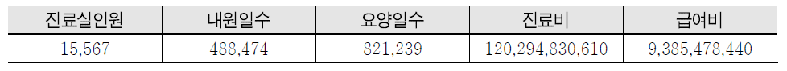
※ 프로그램 Tip
① select count(distinct JID) as j_count, sum(VST_DDCNT) as VST_DDCNT,…
⇒ count, distinct 함수를 이용해 j_count(이용자 수) 변수 생성
- distinct(변수명) : 동일한 값을 가지는 2개 이상의 행들에 대해 중복 없이 하나의 행 (unique)으로 추출
- count(변수명) : 변수가 가지고 있는 행의 개수를 헤아리는 함수
- count(distinct(변수명)): 변수명이 동일하지 않는 행의 개수를 개산
② where cancer = 1 and FOM_TP_CD=‘021’
⇒ hira.T20_table에서 cancer변수가 1이면서 FOM_TP_CD변수가 021(입원)인 행(명세서)을 추출
- where : 특정 조건에 맞는 데이터 셋을 생성하거나 내보낼 때 사용하는 함수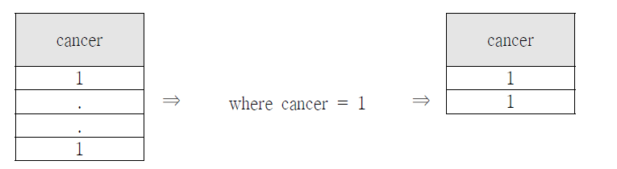 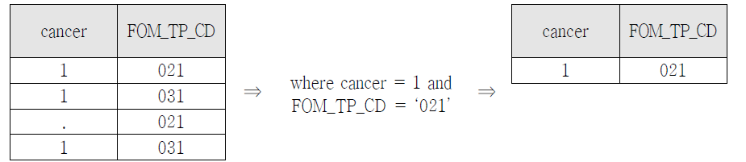
3.2.3 질병통계 작성 2
(2)에서 생성한 cancer 테이블을 이용하여 암환자의 입원에 대해 연간 환자당 진료 비, 환자당 일당 진료비의 합과 평균 등을 계산하고자 한다. 먼저 암환자 개개인의 연간 내원일수, 진료비, 환자당 일당 진료비를 계산하기 위하여 SQL문을 이용하여 환자당 연간 내원일수, 진료비를 계산하고, 계산된 진료비를 내원일수로 나누어서 환 자당 일당진료비를 계산한다.
/*질병통계(암환자) 작성 2*/ proc sql;
create table cancer_2 as select JID,
sum(VST_DDCNT) as 내원일수, sum(RVD_RPE_TAMT_AMT) as 진료비,
calculated 진료비 / calculated 내원일수 as 환자당 일당 진료비 from hira.t20_table
where cancer=1 and FOM_TP_CD='021';/*질병별, 서식구분별*/ group by jid;
quit;
JID:수진자대체키, VST_DDCNT:내원일수, RVD_RPE_TAMT_AMT:심결요양급여비용총액위 프로그램 수행 결과 생성되는 cancer_2 테이블은 다음과 같다.
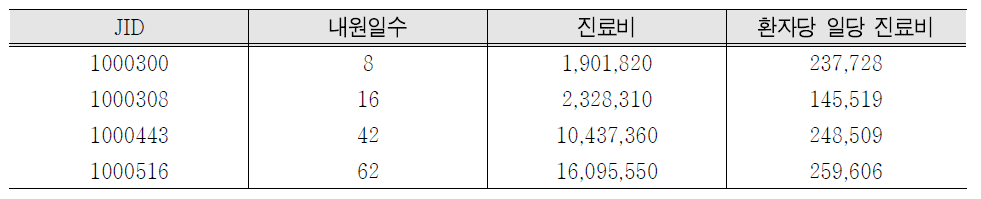
위 테이블에서 계산된 환자당 일당 진료비의 기술통계량은 PROC MEANS 프로시 저를 이용하여 다음과 같이 계산할 수 있다. 여기서 Q1은 제1사분위수(제25백분위 수), Q3은 제3사분위수(제75백분위수)를 나타낸다
/*질병통계(암환자) 작성 3 */
proc means data=cancer_2 n mean sum q1 q3 ; var 진료비 환자당 일당 진료비;
run;위 프로그램 수행 결과 생성되는 기술통계량 값은 다음과 같다.
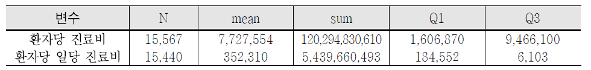
※ 프로그램 Tip
① select JID, sum(VST_DDCNT) as 내원일수, sum(RVD_RPE_TAMT_AMT) as 진료비,
calculated 내원일수 / calculated 진료비 as 환자당 일당 진료비
⇒ 암환자의 연간 내원일수와 진료비의 합을 계산하며, 계산된 내원일수를 계산된 진료비로 나누어 환자당 일당 진료비를 계산
- calculated (변수명) : select문에서 기생성한 변수를 나타냄
※ 프로그램 Tip
① proc means data=cancer_2 n mean sum q1 q3
⇒ cancer_2 테이블에서 표본 수, 평균, 합계, 제 1사분위수, 제 3사분위수를 계산
② var 진료비 환자당 일당 진료비
⇒ 기술통계량을 계산할 변수 지정
- proc means (옵션) : 기술통계량을 구하는 프로시저 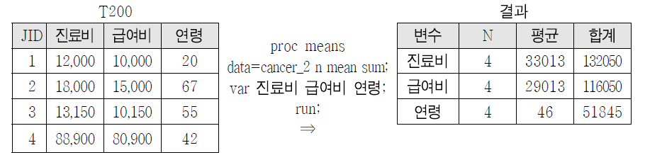
3.3 의약품 사용 분석
다음에서 생성한 drug_table 테이블의 명세서 기준 요양기관 내에서의 의료서비스 현황 및 원외처방 약제 정보를 이용하여 시도별, 요양기관종별, 상병별, 연령별, 원 내·외 처방별 주성분별 사용실적 정보를 분석하고자 한다.
3.3.1 고혈압약제 성분 사용 테이블 생성
주성분 코드와 사용량, 금액, 성분명 등을 포함한 의약품 테이블(drug_table_1)과 명세서 기준 질병여부 변수 및 T200 테이블의 명세서를 조인하여 생성한 T20_table 을 조인하기 위하여 SQL문의 LEFT JOIN 기능을 이용한다. 또한 WHERE문을 이용하 여 고혈압약제에 대한 성분만을 테이블에 포함시킨다.

proc sql;
create table hira.drug_table as select a.*, b.*
from drug_table_1 as a
left join hira.T20_table as b
on (a.spec_id_sno = b.spec_id_sno) where a.gnl_nm ne '';
quit;위 프로그램 수행 결과 생성되는 hira.drug_table 테이블은 다음과 같다.
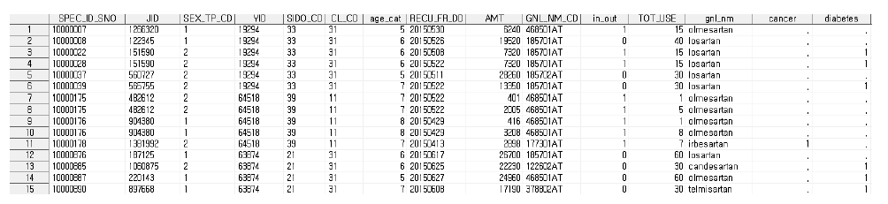
※ 프로그램 Tip
① select a.*, b.*
⇒ a로 지정된 테이블(drug_table_1)에 있는 모든 변수와 b로 지정된 테이블(hira.T20_table) 의 모든 변수를 선택
② from drug_table_1 as a
⇒ drug_table_1 테이블을 a로 지정
③ left join hira.T20_table as b
⇒ hira 라이브러리의 T20_table 테이블을 b로 지정
④ on (a.spec_id_sno = b.spec_id_sno)
⇒ a로 지정된 테이블(drug_table)에서 spec_id_sno(개인식별대체키)와 b로 지정된 테이블 (hira 라이브러리의 T20_table)의 spec_id_sno(개인식별대체키)를 기준으로 join
⑤ where a.gnl_nm ne ''
⇒ 성분명 변수 중 고혈압약제 성분명을 포함하지 않는 행을 제거하여 고혈압약제 성분 사용 테이블 생성3.3.1.1 진료년월, 시도별, 원내·외 처방구분별, 성별, 연령구간별 사용실적
위에서 생성한 hira.drug_table 테이블을 이용하여 진료년월, 시도별, 원내/원외 처 방별, 성별, 연령구간별에 따른 고혈압 약제 (ARB) 사용실적을 구하기 위하여 SQL문 을 이용한다.
/* 의약품 사용 분포 분석 1 – 진료년월, 시도별, 원내․외 처방구분별 성별 연령구간별 사용실적*/ proc sql;
create table drug_exam1 as
select substr(recu_fr_dd,1,6) as 요양년월,
SIDO_CD, CL_CD, in_out, gnl_nm, SEX_TP_CD, age_cat, count(distinct jid) as 환자 수
from hira.drug_table
group by recu_fr_ym, SIDO_CD, CL_CD, in_out, gnl_nm, SEX_TP_CD, age_cat; quit;
JID:수진자대체키, RECU_FR_DD:요양개시일자, SIDO_CD:시도코드, CL_CD:요양기관종별코드,
in_out:처방구분, GNL_NM:성분명, SEX_TP_CD:성별, AGE_CAT:연령군위 프로그램 수행 결과 생성되는 drug_exam1 테이블은 다음과 같다

※ 프로그램 Tip
① select substr(recu_fr_dd,1,6) as 요양년월, SIDO_CD, CL_CD, in_out, gnl_cd, SEX_TP_CD, age_cat, count(distinct JID) as 환자 수
⇒ hira.drug_table테이블의 요양년월, 시도코드, 요양기관종별코드, 처방구분, 성분명, 성별,연령군 변수를 선택
⇒ substr함수를 이용하여 recu_fr_dd(요양개시일자)변수에서 요양년월 변수 생성
⇒ distinct, count함수를 이용하여 환자 수 변수 생성
② group by 요양년월, SIDO_CD, CL_CD, in_out, gnl_nm, SEX_TP_CD, age_cat
⇒ 요양월, 시도코드, 요양기관종별코드, 처방구분, 성분명, 성별 변수를 기준으로 데이터를 요약3.3.1.2 시도별 요양기관종별 사용실적
위에서 생성한 hira.drug_table 테이블을 이용하여 시도별 요양기관종별 고혈압 약 제 (ARB) 사용실적을 구하기 위하여 SQL문을 이용한다.
/* 의약품 사용 분포 분석 2 - 시도별 요양기관그룹별 사용실적*/ proc sql;
create table drug_exam2 as select SIDO_CD, CL_CD, gnl_nm,
sum(TOT_USE) as 사용량, sum(amt) as 금액, count(distinct JID) as 환자 수
from hira.drug_table
group by SIDO_CD, CL_CD, gnl_nm; quit;
JID:수진자대체키, SIDO_CD:시도코드, CL_CD:요양기관종별코드, GNL_NM:성분명, TOT_USE:사용량,
AMT:금액위 프로그램 수행 결과 생성되는 drug_exam2 테이블은 다음과 같다.

※ 프로그램 Tip
① select SIDO_CD, CL_CD, gnl_nm, sum(TOT_USE) as 사용량, sum(amt) as 금액, count(distinct JID) as 환자 수
⇒ count, distinct함수를 이용해 환자 수 변수 생성
⇒ sum 함수를 이용해 사용량, 금액 변수 생성
② group by SIDO_CD, CL_CD, gnl_nm
⇒ 시도코드, 요양기관종별코드, 성분명 변수를 기준으로 데이터를 요약3.3.1.3 요양기관종별 사용실적
위에서 생성한 hira.drug_table 테이블을 이용하여 요양기관종별 고혈압 약제(ARB) 사용실적을 구하기 위하여 SQL문을 이용한다
/* 의약품 사용 분포 분석 3 - 요양기관종별 사용실적*/ proc sql;
create table drug_exam3 as
select CL_CD, gnl_nm, sum(TOT_USE) as 사용량, sum(amt) as 금액, count(distinct JID) as 환자 수
from hira.drug_table
group by CL_CD, gnl_nm; quit;
JID:수진자대체키,
AMT:금액위 프로그램 수행 결과 생성되는 drug_exam3 테이블은 다음과 같다.
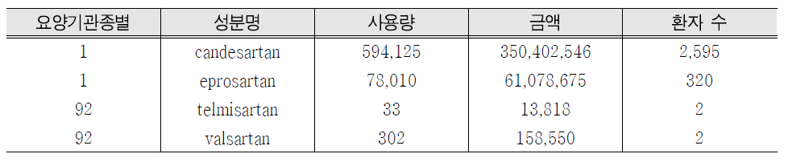
프로그램 Tip
① select CL_CD, gnl_nm, sum(TOT_USE) as 사용량, sum(amt) as 금액, count(distinct JID) as 환자 수
⇒ count, distinct함수를 이용해 환자 수 변수 생성
⇒ sum 함수를 이용해 사용량, 금액 변수 생성
② group by CL_CD, gnl_nm
⇒ 요양기관종별코드, 성분명 변수를 기준으로 데이터를 요약3.3.1.4 요양기관종별 원내·외 처방구분별 사용실적
위에서 생성한 hira.drug_table 테이블을 이용하여 요양기관종별 원내·외 처방별 고혈압 약제(ARB) 사용실적을 구하기 위하여 SQL문을 이용한다
/* 의약품 사용 분포 분석 4 - 요양기관종별 원내·원외 사용실적*/ proc sql;
create table drug_exam4 as
select CL_CD, in_out, gnl_nm, sum(TOT_USE) as 사용량, sum(amt) as 금액, count(distinct JID) as 환자 수
from hira.drug_table
group by CL_CD, in_out, gnl_nm;
quit;
JID:수진자대체키,
AMT:금액위 프로그램 수행 결과 생성되는 drug_exam4 테이블은 다음과 같다
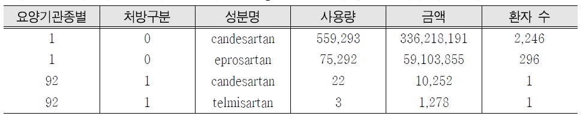
※ 프로그램 Tip
① select CL_CD, in_out, gnl_nm, sum(TOT_USE) as 사용량, sum(amt) as 금액, count(distinct JID) as 환자 수
⇒ count, distinct함수를 이용해 환자 수 변수 생성
⇒ sum 함수를 이용해 사용량, 금액 변수 생성
② group by CL_CD, in_out, gnl_nm
⇒ 요양기관종별코드, 처방구분, 성분명 변수를 기준으로 데이터를 요약3.3.1.5 성분별 시도별 사용실적
위에서 생성한 hira.drug_table 테이블을 이용하여 성분별 시도별 고혈압 약제(ARB) 사용실적을 구하기 위하여 SQL문을 이용한다.
/* 의약품 사용 분포 분석 5 – 성분별 시도별 사용실적*/ proc sql;
create table drug_exam5 as
select gnl_nm, SIDO_CD, sum(TOT_USE) as 사용량, sum(amt) as 금액, count(distinct JID) as 환자 수
from hira.drug_table group by gnl_nm, SIDO_CD;
quit;
JID:수진자대체키, SIDO_CD:시도코드, GNL_NM:성분명, TOT_USE:사용량, AMT:금액위 프로그램 수행 결과 생성되는 drug_exam5테이블은 다음과 같다.

※ 프로그램 Tip
① select gnl_nm, SIDO_CD, sum(TOT_USE) as 사용량, sum(amt) as 금액, count(distinct JID) as 환자 수
⇒ count, distinct함수를 이용해 환자 수 변수 생성
⇒ sum 함수를 이용해 사용량, 금액 변수 생성
② group by gnl_nm, SIDO_CD
⇒ 성분명, 시도코드 변수를 기준으로 데이터를 요약3.3.1.6 원내·외 처방구분별 환자 수 사용실적
위에서 생성한 hira.drug_table 테이블을 이용하여 원내·외 처방별 환자 수 및 고 혈압 약제(ARB) 사용실적을 구하기 위하여 SQL문을 이용한다.
/* 의약품 사용 분포 분석 6 - 원내·원외 환자수 사용실적*/ proc sql;
create table drug_exam6 as
select in_out, gnl_nm, sum(TOT_USE) as 사용량, sum(amt) as 금액, count(distinct JID) as 환자 수
from hira.drug_table group by in_out, gnl_nm;
quit;
JID:수진자대체키, in_out:처방구분, GNL_NM:성분명, TOT_USE:사용량, AMT:금액위 프로그램 수행 결과 생성되는 drug_exam6테이블은 다음과 같다.

※ 프로그램 Tip
① select in_out, gnl_nm, sum(TOT_USE) as 사용량, sum(amt) as 금액, count(distinct JID) as 환자 수
⇒ count, distinct함수를 이용해 환자 수 변수 생성
⇒ sum 함수를 이용해 사용량, 금액 변수 생성
② group by in_out, gnl_nm
⇒ 처방구분, 성분명 변수를 기준으로 데이터를 요약3.3.1.7 상병별 연령구간별 사용실적
2.1에서 생성한 t2040_yk_drug 테이블을 이용하여 암과 당뇨병 환자를 대상으로 의 약품성분의 연령구간별 고혈압 약제(ARB) 사용실적을 구하기 위하여 SQL문을 이용 한다.
/*의약품 사용 분포 분석7 – 상병별 연령구간별 사용실적 */ proc sql; /* 전체 암에 대한 상병별 연령구간별 사용실적 */
create table drug_exam7 as
select age_cat, gnl_nm, sum(TOT_USE) as 사용량, sum(amt) as 금액, count(distinct JID) as 환자 수
from t2040_yk_drug
where gnl_nm ne ‘’and cancer=1 group by age_cat, gnl_nm;
quit;
proc sql;/* 당뇨병에 대한 상병별 연령구간별 사용실적 */ create table drug_exam7 as
select age_cat, gnl_nm, sum(TOT_USE) as 사용량, sum(amt) as 금액, count(distinct JID) as 환자 수
from t2040_yk_drug
where gnl_nm ne ‘’and diabetes=1 group by age_cat, gnl_nm;
quit;
JID:수진자대체키, GNL_NM:성분명, AGE_CAT:연령군, TOT_USE:사용량, AMT:금액위 프로그램을 살펴 보면, 분석대상 질병만 암과 당뇨병으로 차이가 있을을 알 수 있다. 따라서 일부 변수값만 변경이 되고 동일한 프로그램이 반복되는 경우는 아래 와 같이 매크로(MACRO)를 이용하여 프로그램을 작성할 수 있다.
/*의약품 사용 분포 분석7 – 상병별 연령구간별 사용실적(MACRO)*/
%macro drug_exam7(sick=); /*매크로 및 매크로 변수 생성 */
proc sql;
create table drug_exam7_&sick. as
select age_cat, gnl_nm, sum(tot_use) as tot_use, sum(amt) as amt, count(distinct jid) as j_count
from hira.drug_table where &sick. = 1
group by age_cat, gnl_nm; quit;
%mend;
options mlogic mprint;
%drug_exam7(sick=cancer) /* 암에 대한 연령구간별 사용실적 매크로 실행 */
%drug_exam7(sick=diabetes) /* 당뇨병에 대한 연령구간별 사용실적 매크로 실행 */위 프로그램 수행 결과 생성되는 drug_exam7테이블은 다음과 같다.
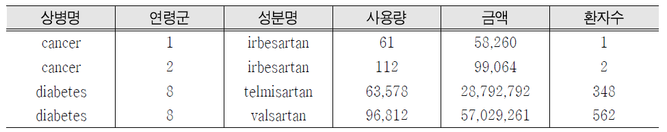
※ 프로그램 Tip
① select disease, age_cat, gnl_nm, sum(TOT_USE) as 사용량, sum(amt) as 금액, count(distinct JID) as 환자 수
⇒ count, distinct함수를 이용해 환자 수 변수 생성
⇒ sum 함수를 이용해 사용량, 금액 변수 생성
② where gnl_nm ne ‘’ and cancer=1 where gnl_nm ne ‘’ and diabetes=1
⇒ t2040_yk_drug 테이블에서 암과 당뇨를 질병으로 앓고 있는 줄 선택 및 고혈압약제를 사용 하지 않은 줄을 제거
③ group by age_cat, gnl_nm※ 프로그램 Tip(macro)
① %macro drug_exam6(sick=)
⇒ 매개변수를 가진 매크로 정의, 괄호 내에 정의된 매크로 변수는 매크로 내의 정보를 전달 하도록 한다.
(예) 모듈단위로 프로그램을 작성하고, 실행
%MACRO 문장이름(변수1= , 변수2=, … 변수n= ); SAS 프로그램 및 매크로 프로그램
%MEND 문장이름;
%문장이름(변수1= , 변수2=, … 변수n= )
② proc sql; create table drug_exam6_&sick.as …
⇒ 매크로가 수행될 때, 매크로 변수는 매크로 내의 SAS프로그램을 호출된 매크로의 지정된 값에 대응시킨다.
③ %drug_exam6(sick=cancer)
⇒ 다음과 같이 매크로를 호출하여 매크로 내의 SAS프로그램에 매크로 변수 값을 대응해 SAS 프로그램이 수행하도록 한다.
④ options mlogic mprint;
⇒ macro 디버깅 옵션
- MLOSIC | NOMLOSIC : 매크로 부분에 대한 실행 내용을 로그 창에 자세히 출력
- MPRINT | NOMPRINT : 매크로 프로세서에 의해 번역된 SAS코드 출력
- SYMBOLGEN | NOSYMBOLGEN : 매크로 변수의 값을 로그 창에 출력
3.3.1.8 상병별 요양기관종별 사용실적
2.1에서 생성한 t2040_yk_drug테이블에 대해 암과 당뇨병환자를 대상으로 고혈압 약제(ARB)의 요양기관종별 사용실적을 구하기 위하여 SQL문을 이용한다.
/* 의약품 사용 분포 분석8 - 상병별 요양기관종별 사용실적 */ proc sql; /* 전체 암에 대한 상병별 요양기관종별 사용실적 */
create table drug_exam8 as
select CL_CD, gnl_nm, sum(TOT_USE) as 사용량, sum(amt) as 금액, count(distinct JID) as 환자 수
from t2040_yk_drug
where gnl_nm ne ‘’and cancer=1 group by CL_CD, gnl_nm;
quit;
proc sql;/* 당뇨병에 대한 상병별 요양기관종별 사용실적 */ create table drug_exam8 as
select CL_CD, gnl_nm, sum(TOT_USE) as 사용량, sum(amt) as 금액, count(distinct JID) as 환자 수
from t2040_yk_drug
where gnl_nm ne ‘’and diabetes=1 group by CL_CD, gnl_nm;
quit;
JID:수진자대체키, CL_CD:요양기관종별코드, GNL_NM:성분명, TOT_USE:사용량, AMT:금액위 프로그램 수행 결과 생성되는 drug_exam8테이블은 다음과 같다.

※ 프로그램 Tip
① select CL_CD, gnl_nm, sum(TOT_USE) as 사용량, sum(amt) as 금액, count(distinct JID) as 환자 수
⇒ count, distinct함수를 이용해 환자 수 변수 생성
⇒ sum 함수를 이용해 사용량, 금액 변수 생성
② where gnl_nm ne ‘’ and cancer=1 where gnl_nm ne ‘’ and diabetes=1
하지 않은 줄을 제거
③ group by CL_CD, gnl_nm
⇒ 요양기관종별코드, 성분명 변수를 기준으로 데이터를 요약3.4 의료경영지원 관련 지표 생성
의료경영지원 관련 지표를 생성하기 위해 요양기관 테이블의 요양기관종별코드, 시도구분, 병상수준 등의 정보를 사용하고자 한다. 요양기관의 명세서 일반내역을 포 함하고 있는 T200 테이블(왼쪽)을 기준으로 요양기관 테이블을 조인하기 위하여 SQL 문의 LEFT JOIN 기능을 이용한다.
3.4.1 T200 테이블에 요양기관 정보 조인
요양기관 테이블에 있는 변수들을 T200 테이블에 조인하여 분석에 활용하고자 할 경우 다음과 같이 요양기관 정보를 조인할 수 있다.

/*의료경영지원 지표 - 요양기관 정보 및 지표 join*/ proc sql;
create table hira.yk_table as
select a.JID, a.SPEC_ID_SNO, a.YID, a.DGSBJT_CD, a.RVD_RPE_TAMT_AMT,
a.RVD_INSUP_BRDN_AMT, a.SEX_TP_CD, a.age_cat, a.RECU_FR_DD, b.yid, b.CL_CD, b.SIDO_CD, b.BED_GRADE, b.PER_50BED_DOCTOR, b.PER_50BED_DENTAL, b.PER_50BED_ORIENTAL, b.PER_50BED_NURSE
from hira.t20_table as a left join hira.yk as b on(a.YID = b.YID);
quit;위 프로그램 수행 결과 생성되는 yk_table 테이블은 다음과 같다.
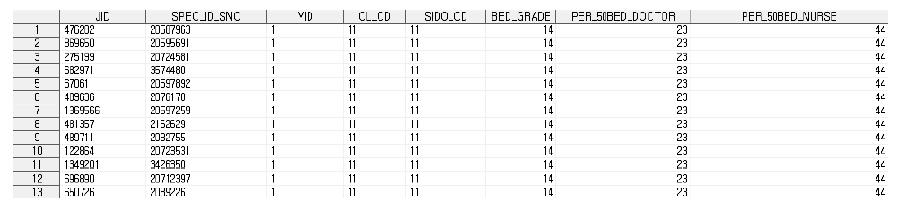
※ 프로그램 Tip
① select a.JID, a.SPEC_ID_SNO, a.YID, a.DGSBJT_CD, a.RVD_RPE_TAMT_AMT,
a.RVD_INSUP_BRDN_AMT, a.SEX_TP_CD, a.age_cat, a.RECU_FR_DD …
⇒ a로 지정된 테이블(hira.t20_table)에 있는 변수와 b로 지정된 요양기관테이블(YK)의 변수를 선택
② from hira.t20 as a
⇒ hira.t20테이블을 a로 지정
③ left join hira.yk as b
⇒ hira.yk 테이블을 b로 지정하여 left join
④ on (a.YID = b.YID)
⇒ a로 지정된 테이블(hira.t20)에서 YID(요양기관대체키)와 b로 지정된 테이블 (hira.t20)의 YID(요양기관대체키)를 기준으로 left join3.4.2 (2) 지역 내 개원가수 분포
- 에서 생성한 yk_table 테이블을 이용하여 진료년월별, 시도구분별, 요양기관종별 요양기관 수를 구하기 위하여 SQL 문을 사용한다.
/*의료경영지원 지표 - 지역 내 개원가수*/ proc sql;
create table yk_exam1 as
select substr(recu_fr_dd,1,6) as 진료년월, SIDO_CD,
CL_CD, count(distinct YID) as 요양기관 수 from hira.yk_table
group by 진료년월, SIDO_CD, CL_CD; quit;
RECU_FR_DD:요양개시일자, SIDO_CD:시도코드, CL_CD:요양기관종별코드, YID:요양기관대체키위 프로그램 수행 결과 생성되는 yk_exam1 테이블은 다음과 같다.
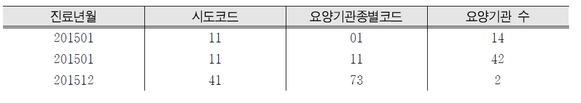
※ 프로그램 Tip
① select substr(recu_fr_dd,1,6) as 진료년월, SIDO_CD, CL_CD, count(distinct YID) as …
⇒ yk_table 테이블의 진료년월, 시도코드, 요양기관종별 변수를 선택
⇒ count, distinct 함수를 이용해 요양기관 수 변수 생성
② group by 요양년월, SIDO_CD, CL_CD
⇒ 진료년월, 시도코드, 요양기관종별코드를 기준으로 요양기관 수 요약3.4.3 일평균환자 수 분포
- 에서 생성한 yk_table 테이블을 이용하여 시도별, 요양기관종별, 요양기관별, 하 루 환자수의 평균을 구하기 위하여 SQL 문을 사용한다.
/*의료경영지원 지표 - 일평균 환자수*/
/* 시도별, 요양기관종별, 요양기관별, 일 환자수 계산*/ proc sql;
create table yk_exam2 as select SIDO_CD,
CL_CD, YID,
recu_fr_dd,
count(distinct JID) as 환자 수 from hira.yk_table
group by SIDO_CD, CL_CD, YID, recu_fr_dd; quit;
RECU_FR_DD:요양개시일자, SIDO_CD:시도코드, CL_CD:요양기관종별코드, YID:요양기관대체키, JID:
수진자대체키위 프로그램 수행 결과 생성되는 yk_exam2 테이블은 다음과 같다.

※ 프로그램 Tip
① select SIDO_CD, CL_CD, YID, recu_fr_dd, count(distinct JID) as 환자 수
⇒ yk_table 테이블의 시도코드, 요양기관종별코드, 요양기관 조인키, 요양개시일자를 선택
⇒ count, distinct 함수를 이용해 환자 수 변수 생성
② group by recu_fr_dd, YID, SIDO_CD, CL_CD
⇒ 시도코드, 요양기관종별코드, 요양기관 조인키, 요양개시일자를 기준으로 환자 수 요약위에서 생성한 환자 수 변수를 이용하여 시도별, 요양기관종별 일평균환자 수를 계산한다
/*의료경영지원 지표 - 일평균 환자 수*/
/* 시도별, 요양기관종별 일평균 환자 수 계산*/ proc means;
class SIDO_CD CL_CD; /* 시도별, 요양기관종별 조합에 대한 기술통계량 산출*/ var j_count; /* 위의 yk_exam2 테이블의 환자 수에 하여 기술통계량 산출*/ run;
SIDO_CD:시도코드, CL_CD:요양기관종별코드위 프로그램 수행결과 생성되는 결과 값은 다음과 같다

※프로그램 Tip
① proc means
class SIDO_CD CL_CD var j_count
⇒ 기술통계량을 구하는 SAS프로시저 중 하나이며, 기술통계량뿐만 아니라 데이터 오류 확인 시에도 많이 사용됨
CLASS에서 지정한 변수들의 수준별 모든 조합에 대해 기술통계량 산출 예) PROC MEANS option;
VAR/BY/CLASS/FREQ/WEIGHT/ID variable;3.4.4 시도별 성별 연령군별 환자 수 분포
- 에서 생성한 yk_table 테이블을 이용하여 시도별, 성별, 연령군별 환자 수를 구 하기 위하여 SQL 문을 사용한다.
/*의료경영지원 지표 - 시도별 성별 연령군별 환자 수*/ proc sql;
create table yk_exam4 as select SIDO_CD,
SEX_TP_CD,
age_cat, count(distinct JID) as 환자 수 from hira.yk_table
group by SIDO_CD, SEX_TP_CD, age_cat; quit;
SEX_TP_CD:성별, AGE_CAT:연령군, SIDO_CD:시도코드, JID:수진자대체키위 프로그램 수행 결과 생성되는 yk_exam4 테이블은 다음과 같다.
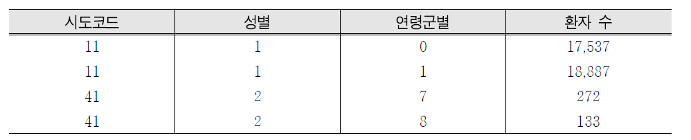
※프로그램Tip
① select SIDO_CD, SEX_TP_CD, age_cat, count(distinct JID) as 환자 수
⇒ hira.yk_table 테이블의 시도코드, 성별, 연령군 선택
⇒ count, distinct 함수를 이용해 환자 수 생성
② group by SIDO_CD, SEX_TP_CD, age_cat
⇒ 시도코드, 성별, 연령군을 기준으로 각 변수들의 값에 따라 환자 수 계산3.4.5 시도별 진료과목별 환자 수 분포
- 에서 생성한 yk_table 테이블을 이용하여 시도별 진료과목별 환자 수를 구하기 위하여 SQL 문을 사용한다.
/*의료경영지원 지표 - 시도별 진료과목별 환자 수*/ proc sql;
create table yk_exam5 as
select SIDO_CD, dgsbjt_cd, count(distinct JID) as 환자 수 from hira.yk_table
where dgsbjt_cd ne '$' group by SIDO_CD, dgsbjt_cd;
quit;
SIDO_CD:시도코드, DGSBJT_CD:진료과목코드, CL_CD:요양기관종별코드, YID:요양기관대체키, JID:
수진자대체키위 프로그램 수행 결과 생성되는 yk_exam5 테이블은 다음과 같다.
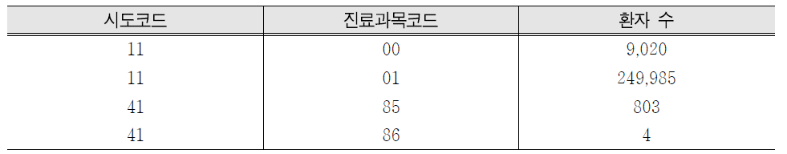
※프로그램 Tip
① select SIDO_CD, DGSBJT_CD, count(distinct JID) as 환자수
⇒ hira.yk_table테이블의 시도코드, 진료과목코드 변수를 선택
⇒ count, distinct 함수를 이용해 환자 수 생성
② where dgsbjt_cd ne '$’
⇒ 진료과목오류코드($) 제외
③ group by SIDO_CD, DGSBJT_CD
⇒ 시도코드, 진료과목코드를 기준으로 각 변수들의 값에 따라 환자 수 계산